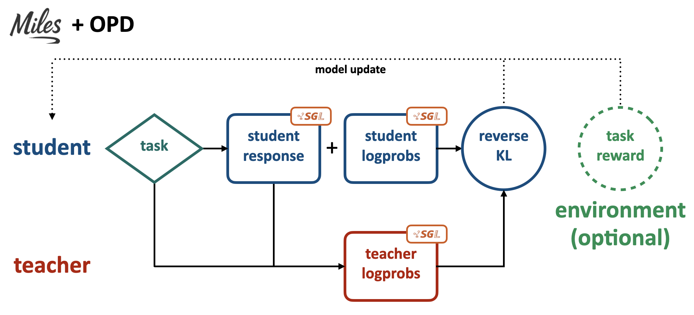
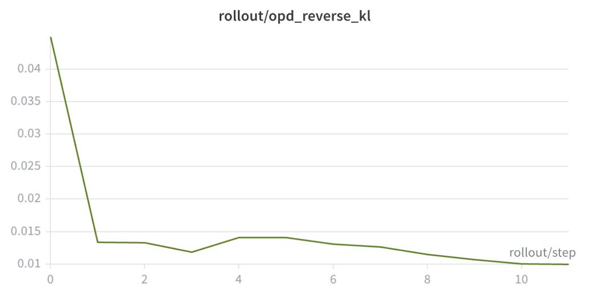

LMSYS团队最近在 Miles框架中集成了 On-Policy Distillation (OPD) 作为一等公民功能。这意味着用户现在可以在Miles的rollout和训练流程中，让student模型纯粹跟随teacher的指导训练，或者将teacher指导与GRPO/PPO风格的强化学习目标结合。
与这一功能发布同时，团队在 单台8×NVIDIA B200节点上使用Qwen3.5-35B-A3B进行了自蒸馏实验。结果显示，纯OPD能在不依赖任何任务特定reward的情况下，将teacher的短推理行为迁移到base student，同时保持甚至提升student的DAPO任务性能。
Miles将OPD实现为加法式reverse-KL训练信号，支持两种重要模式：
Sampled-token OPD：teacher对student在每个位置实际采样的token进行评分。由于采样具有随机性，这不一定是student概率最高的token。
Top-k OPD：在每个位置保留多个候选token及其student logprobs，teacher对相同候选集评分，Miles将对齐的student和teacher logprobs组合成per-token reverse-KL信号。这提供了比单token采样估计更丰富的student-teacher对比。
这种设计使OPD成为Miles中可复用的训练原语，而非独立的蒸馏路径。用户还可以自定义候选集构建方式和权重策略，使得不同蒸馏方案可以复用相同的rollout、评分和训练基础设施。

一个关键的系统改进是稀疏的student-to-teacher评分工作流。
在OPD中，student的rollout产生每个位置的top-k表格。Miles精确知道每个位置需要哪些候选token ID和student logprobs用于KL计算，teacher只需要在对应的因果前缀下对这些候选token ID评分。
最初的实现需要构建所有位置top-k token ID的全局并集，让teacher在每个位置评分这个完整并集。这虽然正确，但产生了 R × |U| 的稠密中间负载（R是响应长度，U是全局token ID并集）。当 |U| 接近R×K时，旧路径需要物化和解析 O(R²K) 的JSON响应，而OPD计算只需要 O(RK) 的值。
新工作流将稠密的全局路径替换为稀疏的逐位置候选token评分。Miles向teacher发送每个位置独立的token ID表，teacher只返回每个位置自己候选集的logprobs。这使teacher响应负载与实际的OPD计算保持一致，对于长序列推理工作负载尤为重要。
团队设计了一个精心控制的自蒸馏实验来验证实现。Teacher先用RLVR（可验证奖励强化学习）训练，使其用显著更短的响应解决DAPO数学问题；Student是对应的预RL基础checkpoint。
选择这个设置的原因是：base Qwen student在原任务上已经很强，直接蒸馏DAPO能力几乎看不到变化。因此团队故意在teacher中创造了一个可测量的行为变化：更短但依然有效的推理：然后测试OPD能否将这种行为迁移到尚未表现出该行为的student。
为了隔离OPD的效果，实验运行了纯蒸馏，不使用任何任务reward。
实验结果：
- Held-out DAPO性能从0.846提升至 0.895
- 采样响应长度从约18.6k降至 5.5k-6.7k token
- Per-token OPD reverse-KL从约0.045降至 0.010


OPD的实现让Miles能够应用于可验证任务奖励不够用的训练场景。许多实际工作流不仅需要优化任务成功率，还需要优化模型行为：推理长度、响应风格、领域特定习惯、与参考模型的分布对齐等。OPD使Miles能够将这些目标表达为teacher引导的训练信号，同时保留相同的rollout和RL训练流水线。
OPD还提供了多teacher整合的路径。不同领域的专家teacher可以为不同领域或能力提供指导，使单个student模型吸收互补行为。因为Miles将OPD视为可复用的原语，同一个student训练流水线可以支持不同的teacher和蒸馏方案，而不需要为每个领域单独建立训练系统。
实现还保持了OPD的可组合性。用户可以运行纯蒸馏，也可以将OPD作为GRPO/PPO目标的辅助信号使用，这对teacher指导和任务奖励需要协同工作的训练工作流很重要。
参考：https://www.lmsys.org/blog/2026-07-18-opd-support-in-miles